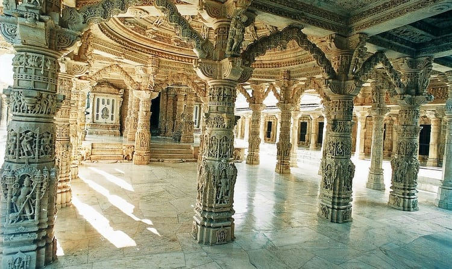

Udaipur Mount Abu Tour Package
2 / 3

Dilwara Jain Temple
❮
❯
Overview
Package Name:Udaipur Mount Abu Tour Package
Duration:1
Price(per person on twin sharing):Rs.12200/-
Rating:4
Itinerary Highlights
Day 1: Pick Udaipur.
Meals: Dinner only
You will be received at airport/railway station and transferred to the hotel. Day at Leisure. By the sunset we take boat ride over Lake Pichola experience of which is beyond any comparison. Overnight at Udaipur.
Day 2: Udaipur Sightseeing.
Meals: Breakfast & Dinner
For the day we visit City Palace, Jagdish Temple, Saheliyon Ki Bari, Pratap Smarak, Fateh Sagar Lake, Fish Museum, Bhartiya Lok Kala Mandal, Karni Mata Temple & Ropeway. Today evening we also witness rich history of Mewar by Sound & Light Show at City Palace. Overnight at Hotel.
Day 3: Udaipur to Mount Abu(163/kms).
Meals: Breakfast & Dinner
After Breakfast We proceed to Mount Abu – one and only hill station of Rajasthan. Upon arrival check in at hotel. Later take tour of Mount Abu to cover Delwara Temple, Nakki Lake, Tod Rock and Sunset point. Overnight at Mount Abu.
Day 4: Drop Mount Abu to Udaipur(163/kms).
Meals: Breakfast only
After breakfast you will be transferred to Udaipur Railway station/Airport to connect your onward journey. End of journey With sweet memories.
Inclusion
- Deluxe Room Pick up & drop from Railway station/Airport Driver Allowance & Fuel
- Toll Tax, State Permit tax & parking
- Transportation by Innova Car
- All sightseeing by Transportation Innova Car
- Daily Breakfast & Dinner
Exclusion
- Meals & drinks other than specified in inclusions
- Expenses of personal nature such as portages, tips, telephone calls, laundry expenses etc
- All entrances, camera fees, guide & driver tipping
- Insurance Cover
- Any air/train/bus fare
Transport Information
Car from Udaipur to Udaipur.
Payment
For all the services contracted, certain advance payment should be made to hold the booking on the confirmed basis and the remaining amount should be paid definitely before the commencement of the services.
Management holds the right to decide upon the amount to be paid as advance payment, based on the nature of the service & the time left for the commencement of the service.
Apart from above in some cases like Special Train Journeys, hotels or resorts bookings during the peak season (X-Mas, New Year), full payment is required to be sent in advance.
Cancellation & Refund Policy
In the event of cancellation of tour/travel services due to any avoidable/unavoidable reason/s, we must be notified of the same in writing. Cancellation charges will be effective from the date we receive advice in writing, and cancellation charges would be as follows:
- 45 days prior to arrival: 10% of the Tour/service cost
- 15 days prior to arrival: 25% of the Tour/service cost
- 07 days prior to arrival: 50% of the Tour/service cost
- 48 hours prior to arrival OR No Show: No Refund
Note: Written cancellation will accept on all working days, except Sunday, Any cancellation sent on Sunday's will be considered on next working day (Monday).
For the X-mas and new year period from 20 Dec to 05 Jan the payment is non-refundable. In case you cancel the trip after commencement, the refund would be restricted to a limited amount only which too would depend on the amount that we would be able to recover from the hoteliers/ contractors we patronize. For unused hotel accommodation, chartered transportation & missed meals etc. we do not bear any responsibility to refund.
Additional Information
For all the services contracted, certain advance payment should be made to hold the booking on the confirmed basis and the remaining amount should be paid definitely before the commencement of the services.
Management holds the right to decide upon the amount to be paid as advance payment, based on the nature of the service & the time left for the commencement of the service.
Apart from above in some cases like Special Train Journeys, hotels or resorts bookings during the peak season (X-Mas, New Year), full payment is required to be sent in advance.